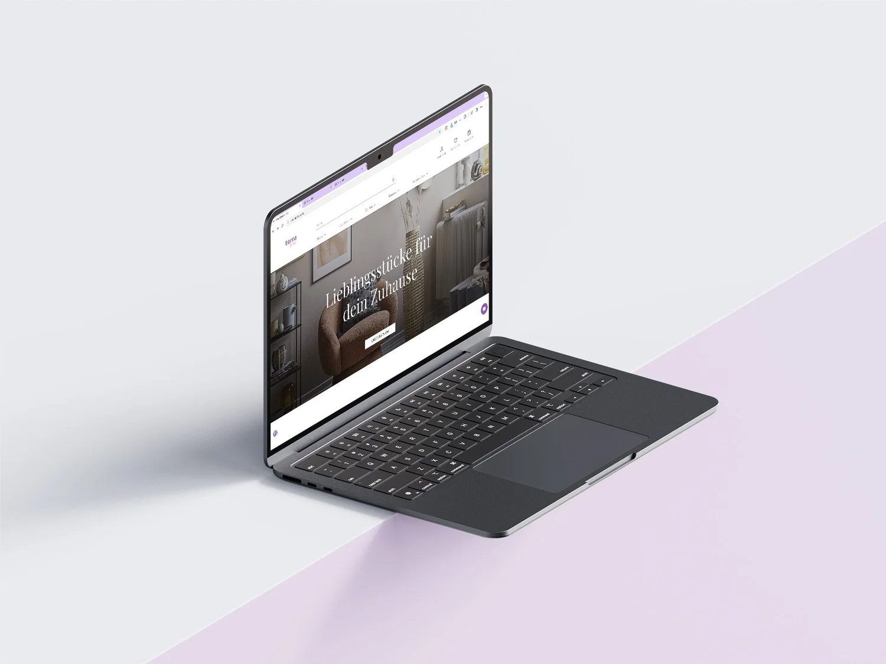
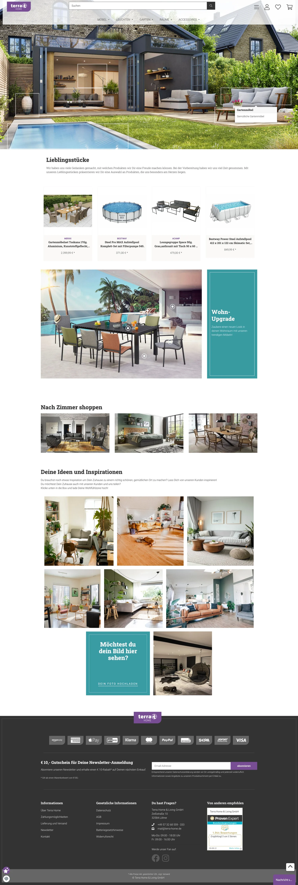
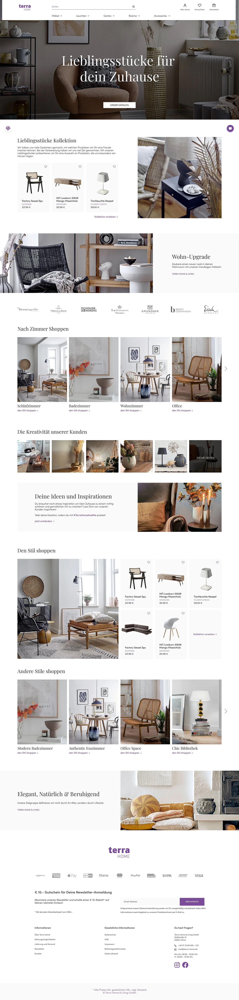
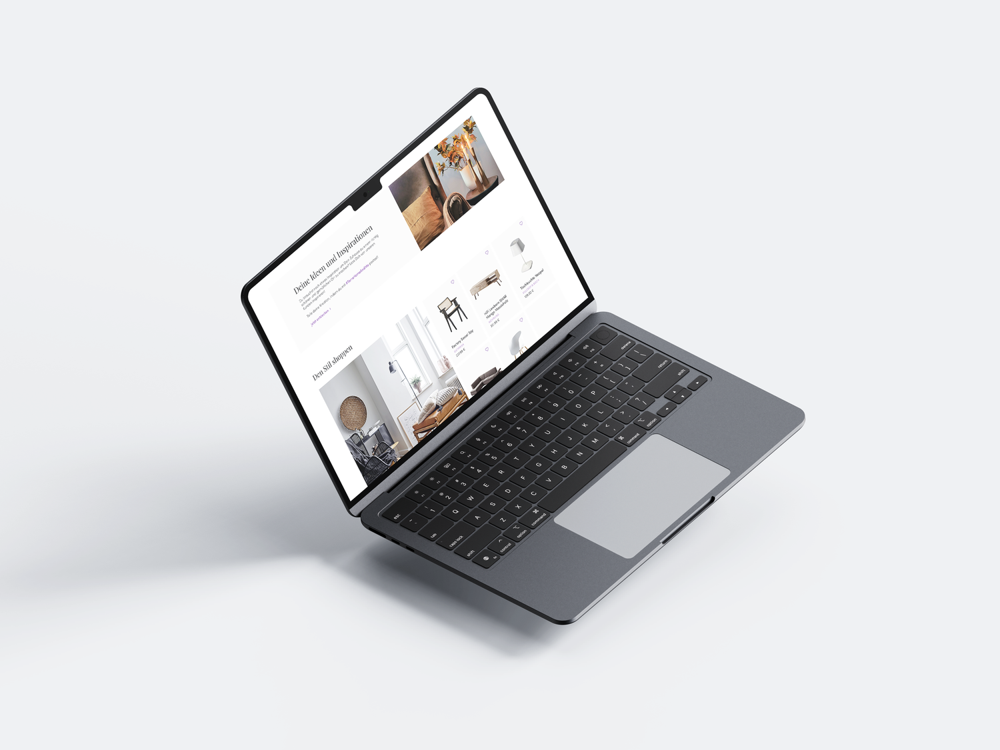
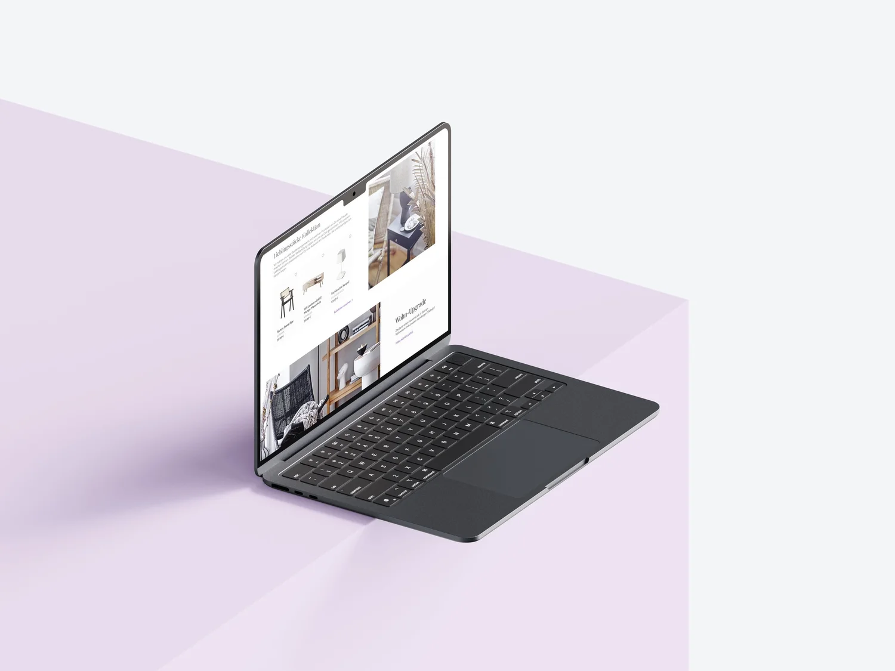

Terra Home repense son empreinte digitale avec une refonte stratégique de son site. L'objectif : moderniser la plateforme tout en tissant un lien plus fort avec ses clients, en intégrant leurs expériences et leurs histoires.

Modernisation : passer d'un design fonctionnel mais daté à une esthétique contemporaine et affirmée.
Engagement client : encourager l'interaction de façon organique, qui ajoute vraiment de la valeur à l'expérience.
Intégrité de marque : moderniser en profondeur sans trahir l'identité et les valeurs existantes.


Engagement accru : plus d'interactions et des visites plus longues grâce à un design engageant.
Accueil positif : une appréciation du nouveau look et des fonctionnalités interactives, donc plus de satisfaction et de fidélité.
Position renforcée : une interface moderne et professionnelle qui aligne Terra Home sur les meilleurs du secteur.

